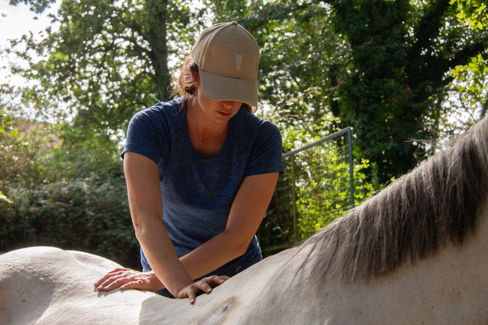
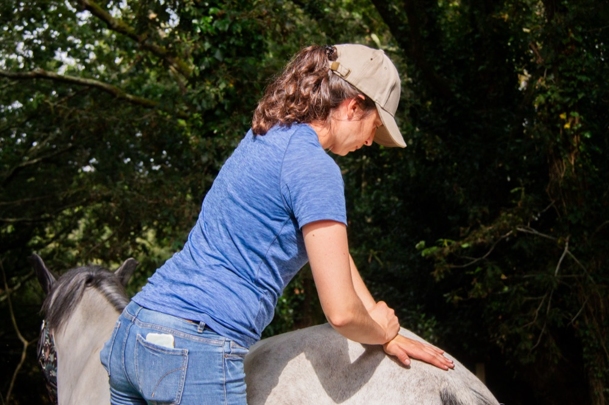
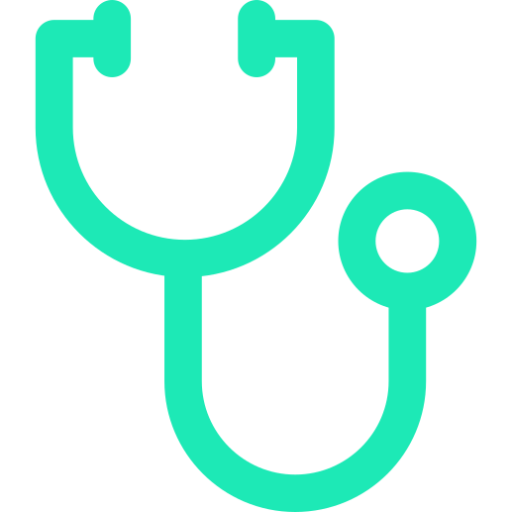
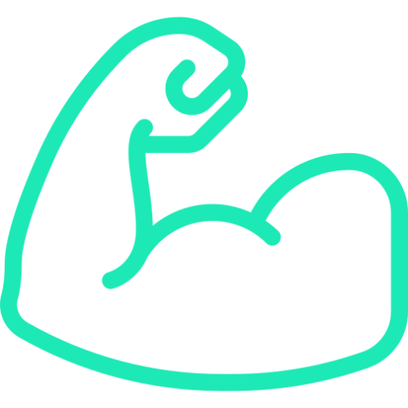
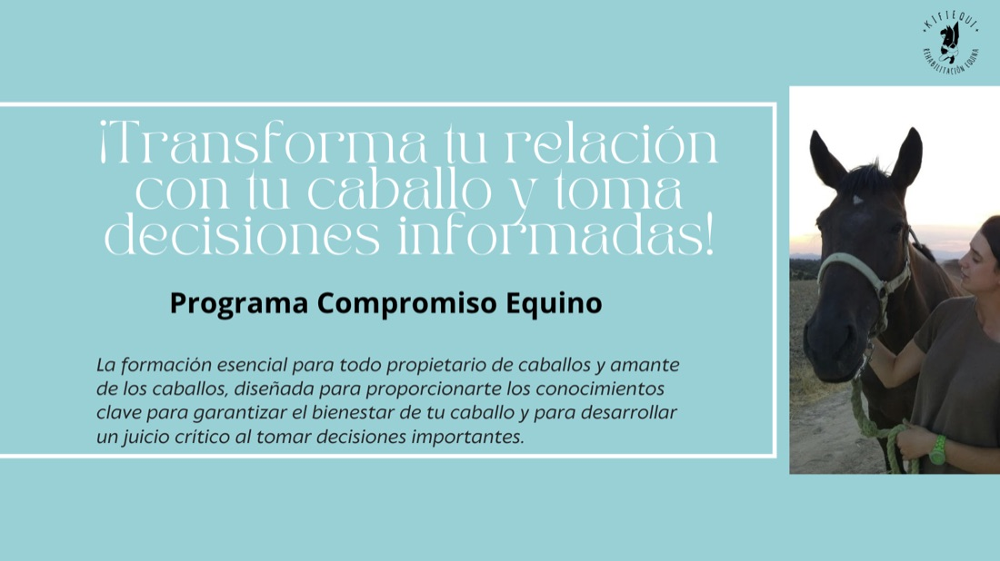
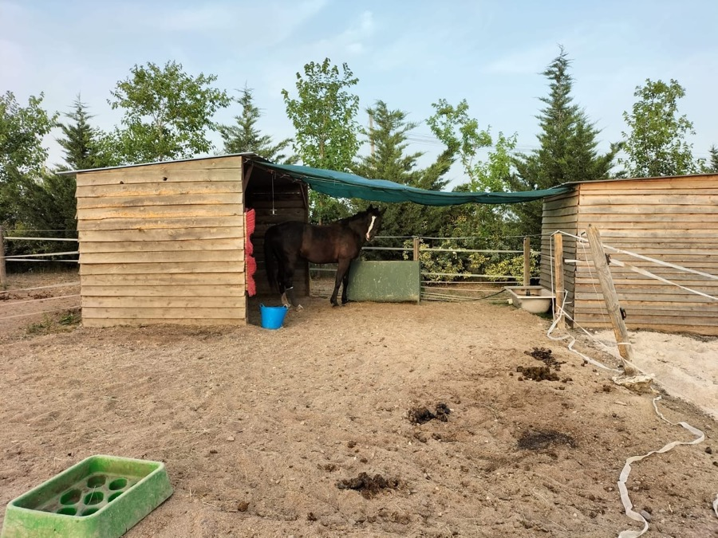
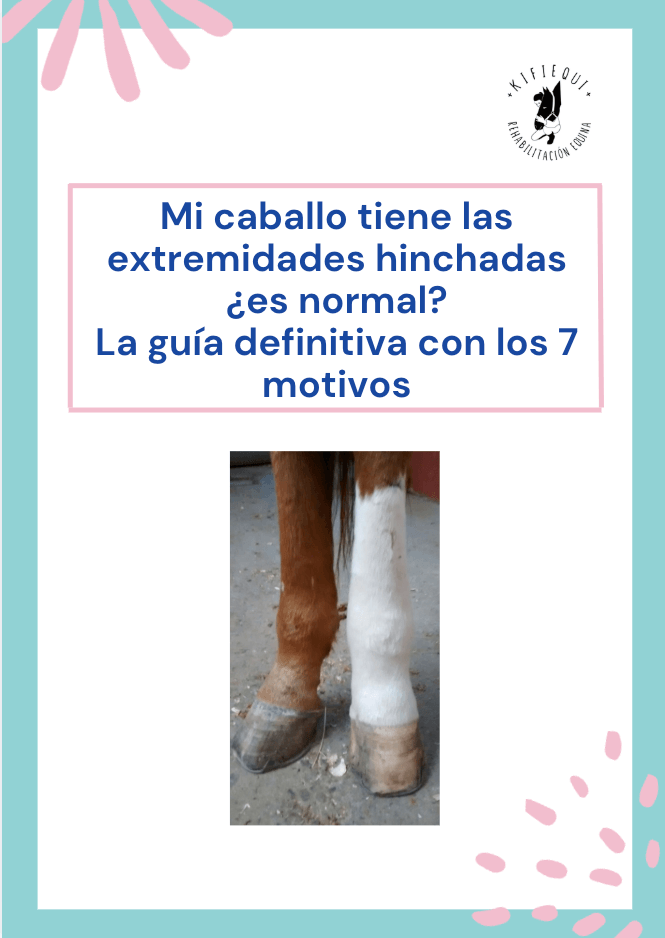
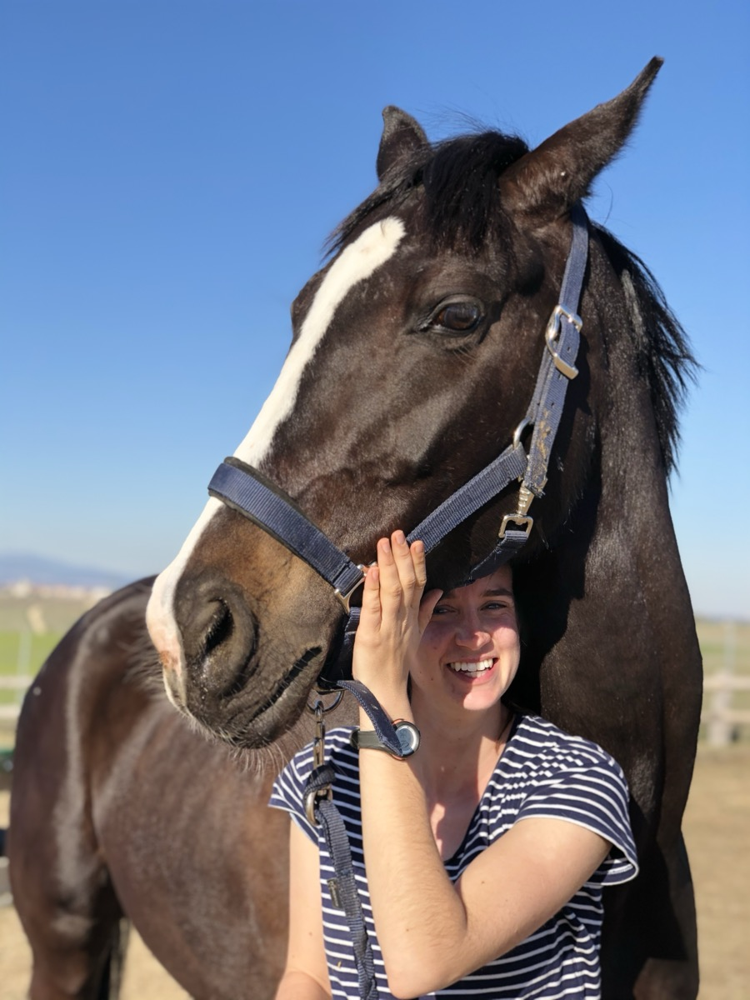

Ayudo a tu caballo a moverse mejor y sin dolor: prevención de lesiones, tratamiento y mejora del rendimiento, con sesiones presenciales, asesorías online y formación para propietarios.
María K. García-Herrera Murillo · Veterinaria, colegiada nº 9221


En la equitación, los caballos son deportistas (incluyendo los caballos considerados de paseo) y como deportistas, sufren alteraciones músculos esqueléticas que van desde alteraciones leves como una subluxación vertebral, contractura muscular hasta patologías más graves como fracturas óseas, roturas de tendones… Todo ello va a conllevar a una pérdida del rendimiento y del bienestar animal.
Cuando nos encontramos con pérdidas de rendimiento debemos de plantearnos las siguientes preguntas. Mi caballo no hace el ejercicio que le estoy exigiendo (siguiendo este orden):
Y en esa segunda opción entraría la quiropráctica y rehabilitación, hay caballos que tienen pérdidas de rendimiento debido a que están teniendo una subluxación vertebral que impide que esa vértebra se pueda mover correctamente, entre las vértebras nos encontramos el foramen intervertebral por el que salen los nervios, estos nervios pueden quedarse "atrapados" cuando dos vértebras están subluxadas, impidiendo un correcto movimiento biomecánico y produciendo dolor que les impide hacer el ejercicio que sus jinetes/amazonas les están pidiendo.
La quiropráctica es una ciencia que mediante ajustes restaura la biomecánica de la columna vertebral por lo que ayuda a que el sistema nervioso funcione correctamente, ya que entre las vértebras se encuentran los forámenes intervertebrales de donde salen los nervios periféricos de la médula espinal.
La rehabilitación es una rama de la medicina en donde se realizan prácticas, en su mayoría, no invasivas, complementarias al tratamiento médico o quirúrgico. La rehabilitación NO sustituye al diagnóstico ni al tratamiento veterinario. Dentro de esas prácticas nos encontramos terapias manuales, mecánicas, electroterapia y trabajo terapéutico.
Así, con la combinación de ambas técnicas:

Ayudamos en la prevención de la aparición de lesiones, disminuir la posibilidad de lesión y las recidivas de estas, ya que se encarga de mantener el rango de movimiento de una articulación en su estado óptimo.
Tanto agudas como crónicas.

Mediante sesiones de mantenimiento y ejercicio terapéutico.
El reposo absoluto es un tratamiento contra-indicando en la mayoría de las patologías músuclo-esqueléticas, por lo debemos de apostar por programas de recuperación en movimiento. El tiempo NO lo cura todo.
¿Sabes identificar si tu caballo presenta dolor? Te dejamos este etograma en donde puedes valorar si tu caballo presenta dolor mientras es montando.
En las sesiones de tratamiento del paciente, los servicios que ofrecemos son:
Además de asesoramiento del programa de entrenamiento y se le recomendarán al propietario unos ejercicios para realizar.
Estos servicios variarán si son sesiones de mantenimiento o sesiones de tratamiento para caballos lesionados (en este caso se realizarán estas sesiones en caballos ya diagnosticados por un veterinario y el trabajo se hará en colaboración con él para obtener el mejor resultado).
¿Te ha pasado que al profesional al que te gustaría realizarle una consulta no está cerca de ti? ¿Estás interesado en contactar con ese profesional, pero económicamente no puedes permitirte pagar una consulta presencial? A mí, me ha pasado, y por eso he decidido añadir el servicio de asesoría o consulta online. Gracias a este servicio me voy a poder reunir contigo de forma online y podremos tratar el tema que me quieras consultar. Las asesorías serán de unos 30 minutos en donde me podrás comentar tu caso, mostrar vídeos, fotos... Todo para que yo pueda ayudarte. Este servicio NO sustituye a una consulta presencial, en muchos casos, os recomendaré que vuestro veterinario examine al caballo, pero para consultas sobre el material que usáis en el caballo, valorar si ciertos comportamientos puedan estar relacionados con dolor o no, ver qué ejercicios se pueden realizar para conseguir una mejor musculatura de esa zona, valorar el trabajo a la cuerda que se está realizando, etc… Me parece una ayuda muy útil y por un precio muy asequible.
Desde 110€
(Precio sin IVA y desplazamiento no incluido)
Tenemos disponibilidad de bonos
55,95€
(Precio con IVA)
Si quieres más información o concretar una asesoría, ponte en contacto conmigo a través de mis redes sociales o correo electrónico.

Sabes que algo no va bien con tu caballo. Aquí aprendes a explicar qué es.
Una formación 100% online para propietarios, profesionales y amantes de los caballos a los que la frase "esto siempre se ha hecho así" no les vale. No te convierte en veterinario: te convierte en el propietario que tu caballo necesita.
Contenido práctico aplicado a tu caballo
De 30 minutos o menos, a tu ritmo
Sesión de preguntas, con grabación
En Discord, con respuesta en 48 h laborables
Bienestar, condición corporal, digestión, cálculo de raciones, mantas y descanso.
Palpación guiada, cojeras, cuidado de cascos, cólicos y constantes vitales.
Cabezadas, embocaduras, sillas y accesorios, con casos reales.
Si tienes, cuidas o vas a comprar un caballo, notas que algo no va bien y quieres razones en lugar de instrucciones, este programa es para ti.

Te ayudo a mejorar el bienestar de tu caballo desde su alojamiento.
Tu caballo pasa muchas horas en su box o cercado, y eso afecta a su salud física y mental. En este curso en vídeo aprenderás a mejorar su alojamiento, tanto en box como en cercado, sin necesidad de grandes recursos.

La guía definitiva con los 7 motivos
Consigue tu guía gratuita apuntándote a la newsletter de Kifiequi, sin llenar tu bandeja de entrada de emails sin sentido.
Consigue tu guía gratuita
Veterinaria · Número de colegiada 9221
Desde muy pequeña he vivido rodeada de caballos. A los 4 años empecé con clases de equitación, llegando a participar en campeonatos de España de ponis y a trabajar en una cuadra de salto en Alemania en 2019, aunque la disciplina que me gusta practicar es el completo.
Estudié Veterinaria en la Universidad Complutense de Madrid (UCM), terminando en 2018.
Durante la carrera también realicé el Grado Medio Inicial de Técnico Deportivo en Equitación y fui alumna interna en el Departamento de Medicina Interna y Cirugía de Grandes Animales del Hospital Clínico Veterinario Complutense (HCVC) de Madrid al igual que en el Departamento de Fisioterapia y Rehabilitación de Pequeños Animales de ese mismo hospital.
En 2020 terminé mi especialización en Fisioterapia y Rehabilitación equina con Equidinamia y en 2021 realicé un postgrado de Quiropráctica Equina y Canina con AIQA.
Me encanta seguir formándome y estar al día en el mundo de la equitación y por ello también creé un blog llamado Inventario Ecuestre en donde hago reseñas y más sobre productos ecuestres.
Puedes contactarnos sin ningún compromiso